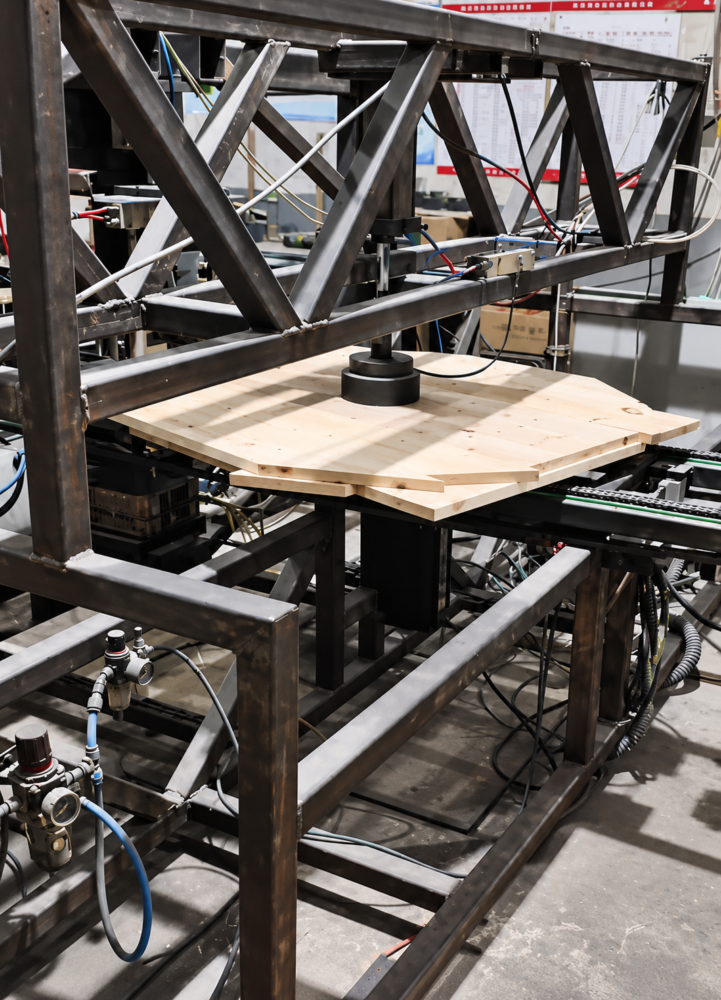
03CUTTING & DRILLING
円形加工・孔あけ
フランジ形状に加工し、孔位置や仕上がりを確認します。
木製ケーブルドラム用フランジ
中国の協力工場で製造する木製フランジを、加工現場・検品・コンテナ出荷まで一貫してご案内します。
SCROLL ↓
For purchasing teams
木製フランジは、写真だけでは加工状態や出荷体制が分かりにくい製品です。実際の原料、加工、成品、積載の様子を公開し、仕様確認から供給までの会話を始めやすくします。
Product
電線や通信ケーブルなどの巻取り・輸送に使われる木製ドラムの円盤部品です。必要な仕様を確認しながら、用途に合う加工と供給方法をご提案します。
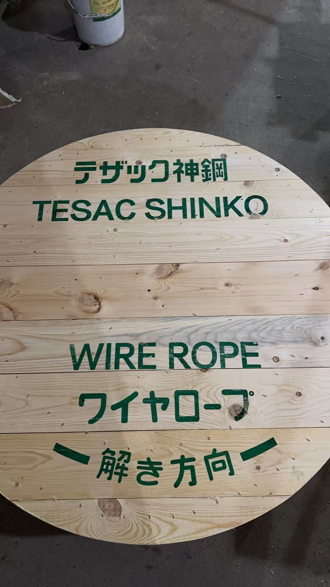
SPECIFICATION CHECK
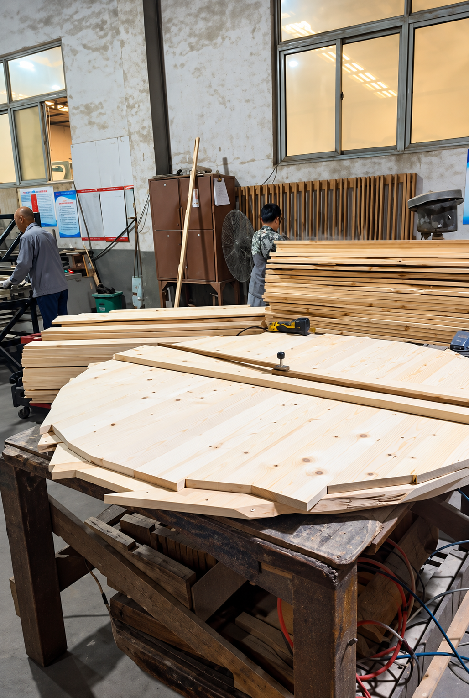
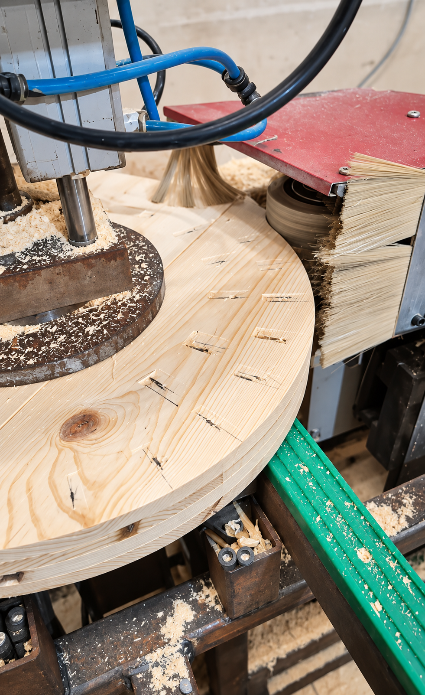
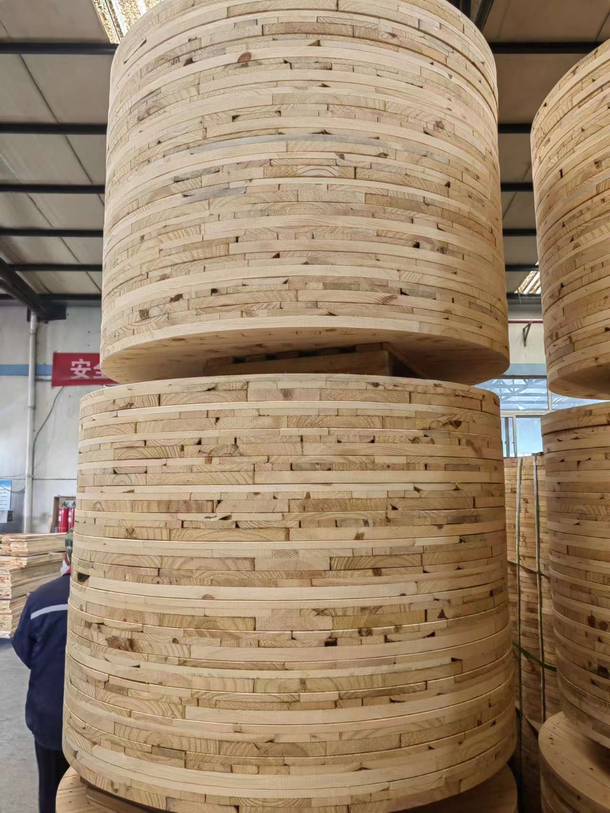
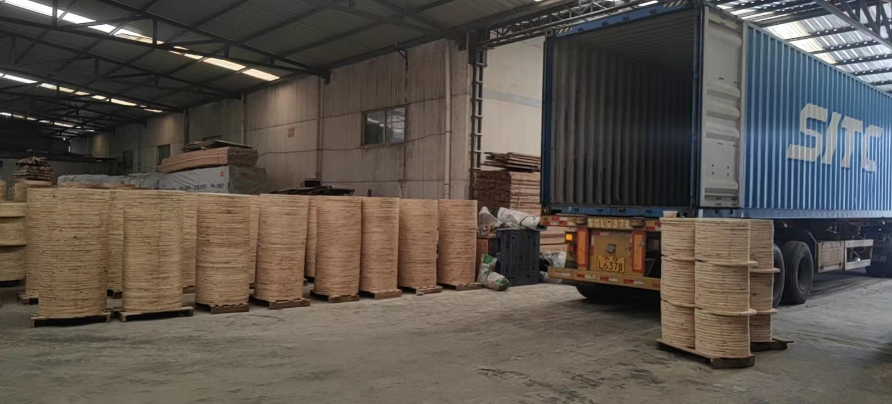
Manufacturing capability
各工程の状態を確認しながら、用途・数量・納期に合わせて製造を進めます。対応可能範囲は仕様確認のうえご案内します。

03CUTTING & DRILLING
フランジ形状に加工し、孔位置や仕上がりを確認します。
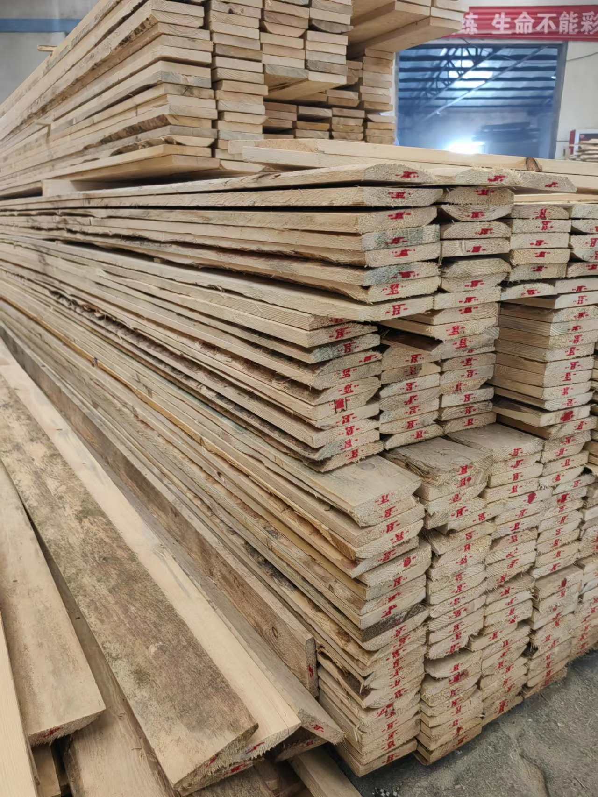
01MATERIALS
木材の状態を確認し、加工に進める材料を準備します。
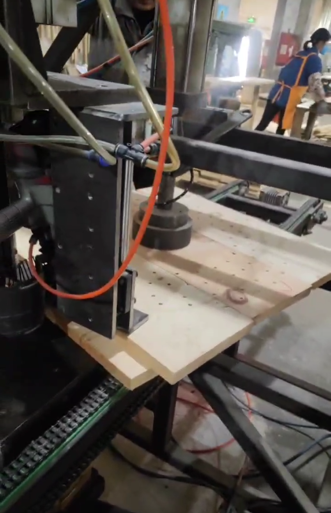
02PREPARATION
用途に合わせ、必要な厚みや構成を整えます。
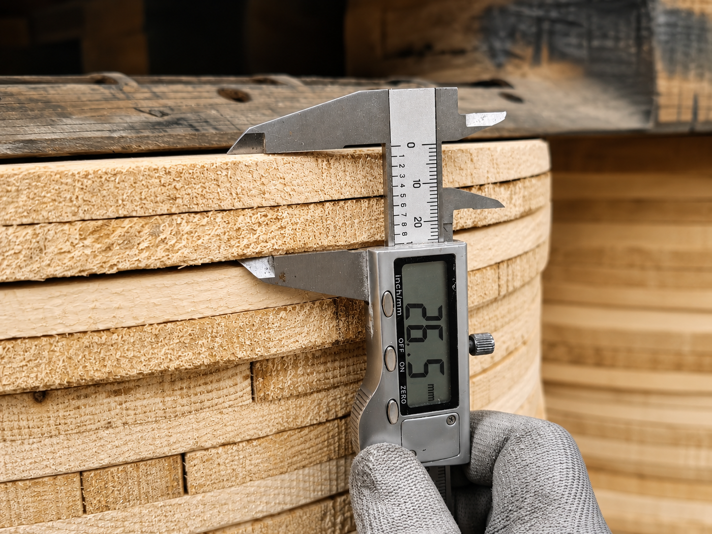
04INSPECTION
木材状態、加工状態、積載前の扱いやすさを確認します。
Factory video
静止画では伝わりにくい設備の動きや作業の流れをご覧いただけます。
Shipping & supply
成品を工場内でまとめて保管し、梱包・積載・出荷まで現場で確認します。数量や納品形態に合わせて進め方をご提案します。
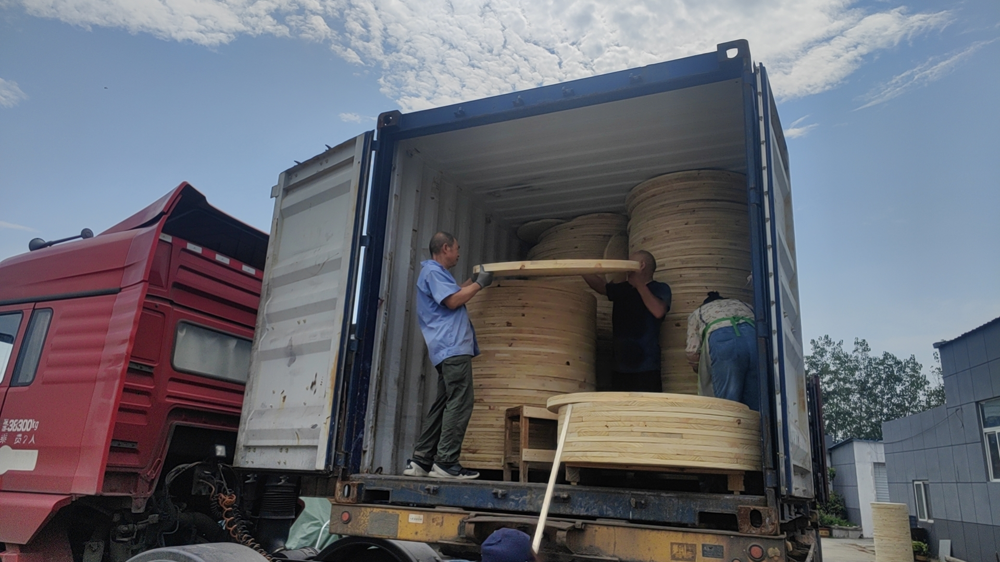
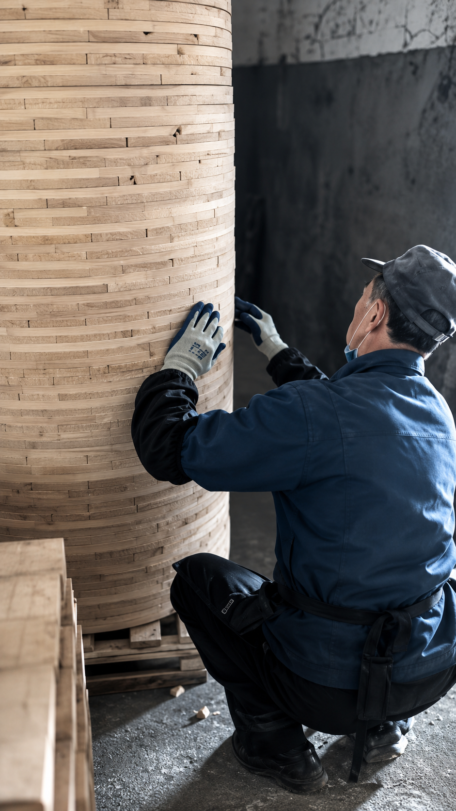
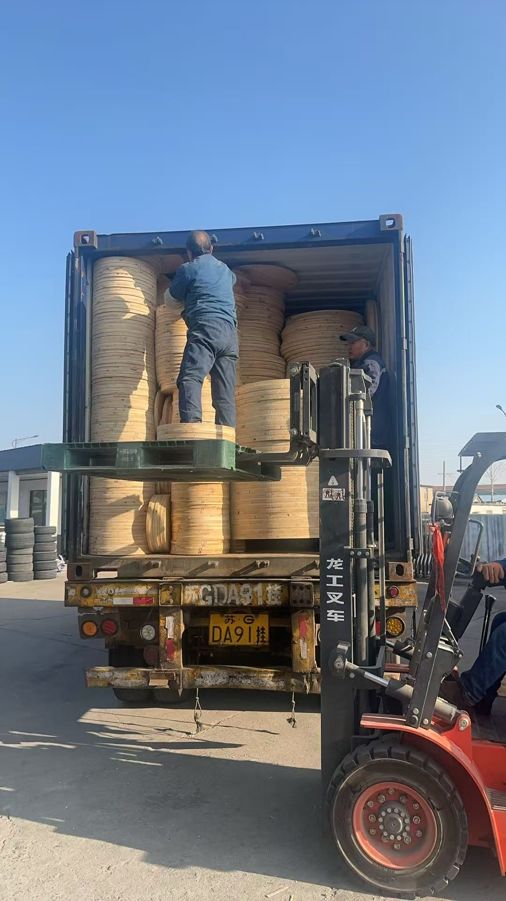
Loading video
フォークリフト作業や積載状況を動画でご覧いただけます。
FAQ
対応可能範囲は、用途・図面・必要数量を確認したうえでご案内します。
仕様と数量を確認し、サンプル・試作の可否と条件をご案内します。
サイズ、数量、加工内容、出荷先、希望時期を確認して個別にお見積りします。
梱包方法、積載、納品先などを確認し、出荷条件に合わせて相談します。
木材の状態、加工状態、孔位置、成品の積載状態など、仕様に応じて確認項目を整理します。
Contact
サイズ、孔加工、数量、出荷時期など、分かる範囲でお知らせください。日本企業向けの確認事項を整理してご返信します。